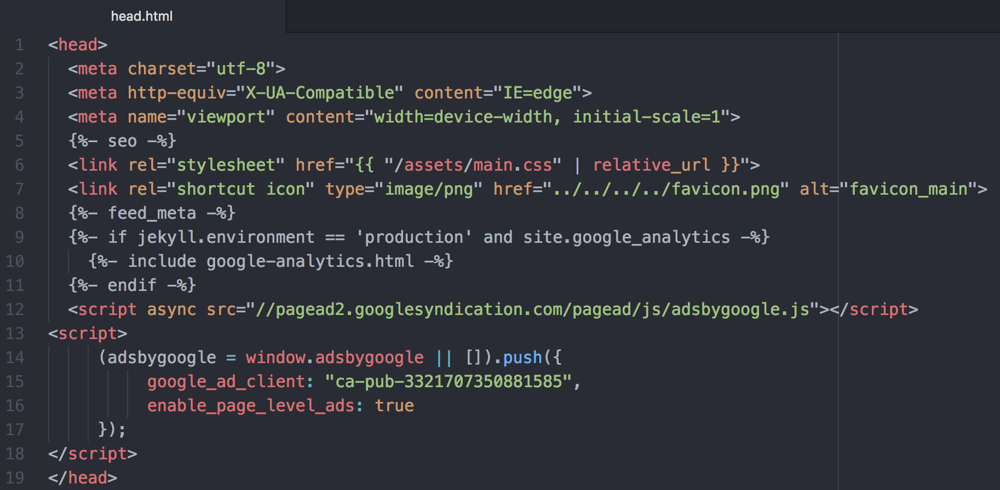

애드센스 승인 후기 (애드고시 합격 팁) 20일만에 성공~!
Blog 개설 20일만에 애드센스 승인 후기, 애드고시 합격 팁
네이버블로그를 제외한 워드프레스, 티스토리 등 모든 외부블로거의 꿈은 바로 애드센스라고 생각합니다. 흔히 승인받기 어려움을 빗대서 애드고시라고 말하는데, 애드센스 승인 방법과 애드고시 합격 팁을 알려드립니다.
승인 활성화 내용입니다. 광고게재 방법이 아닙니다.
* 심사요청 방법
애드센스 심사는 어떻게 받는걸까?
- 애드센스에 가입 후 로그인
- 좌측상단 삼디다스모양의 사이드바를 연다
- 메뉴에서
사이트탭으로 이동 사이트탭에서사이트 추가버튼 누름사이트 URL공간에 자신의 웹페이지의 홈주소를 입력
ex) https://fillip89.github.io- 아래의 코드를 HTML의
<head>와</head>사이에 삽입.
<script async src="//pagead2.googlesyndication.com/pagead/js/adsbygoogle.js"></script>
<script>
(adsbygoogle = window.adsbygoogle || []).push({
google_ad_client: "ca-pub-3321707350881585",
enable_page_level_ads: true
});
</script>코드 삽입 ex)주의 : 반드시 코드를 삽입 후 웹페이지에 반영된걸 확인 한 뒤 애드센스 사이트 추가에서 ‘완료’를 눌러야한다.
이제 ‘완료’를 누르면 애드센스 활성화 승인 심사가 시작된다.
* 워드프레스 사용자는 이 메뉴얼을 참고해주세요.
목차로 이동
* 계정 활성화(심사 승인) 될때까지 걸리는 시간
이하 내용은 Google AdSense 도움말에서 발췌한 내용입니다.
엿 가격은 엿장수 마음이니, 엿장수한테 듣는게 가장 확실한 방법.
근데 구글 도움말은 애매모하기로 워낙 유명해서 절대 콕 찍어서 정확히 알려주지 않는다.
….????
Google:
일부 게시자의 경우 계정 활성화 과정이
하루 만에 완료될 수 있지만,
몇 주가 걸리는 게시자도 있습니다.
계정 활성화 과정 중에서
게시자가 직접 처리해야 하는 단계도 있으며,
이 단계가 완료되어야 계정이 활성화 됩니다.
Google이 조사한 바에 따르면
오랜 시간이 지나도
애드센스 계정이 활성화되지 않는 경우는
대부분 코드를 삽입한 페이지에서
정기적으로 조회가 발생하지 않았기 때문입니다.
정기적인 트래픽이 없다는 것이
장기심사로 빠지는 이유라는데이 블로그는 심사 과정에서 12시간만에 결과가 나왔다.
물논! 방문자는 나 말고 거의 없었다ㅋㅋ
도움말의 내용은 무슨 의미 일까…
근데 중헌 문구를 발견했다.
Google :
게시자 사이트의 전체를
'자동으로 검토'하면서
Google 정책을 준수하는지
확인한다.
로봇이 웹페이지를 훑는다는것 같은데
결국 HTML의 문서구조가 잘 짜여져 있어야한다는 점이 크게 작용한다고 본다.
잘 훑을 수 있는게 첫번째 조건, 컨텐츠의 질, 트래픽은 그 다음인 것 같다.
목차로 이동
* 애드센스 승인에 필요한 조건
많은 사람들이 본문의 텍스트 길이를 주로 논하는 것 같은데, 이건 사실이다. 1000자 이상으로 써라 등등..
이 페이지는, 검색 최적화 SEO에 대한 포스팅은 아니지만, 이(SEO) 상위 노출조건에 충족하게 최대한 맞춰서 본문을 기재한다면 애드센스 승인 조건에 부흥하는 충분한 양의 텍스트를 뽑아낼 수 있을 것이다.
가장 어려운건 컨텐츠 선정인데, 내가 아는 모든 지식을 총 동원해도 10~20개의 페이지에 1000자 이상 써내려간다는건 몹시 어려운 일이다. 창작이 가장 어려운 일이니까.
다음은 이를 해결하기 위한 내가 선택한 방법, 창작이 필요없는
애드고시용 포스팅이다.
- 카테고리수를 논하는 분들도 계신데, 저는 애드센스 심사할때 총 4개 카테고리를 갖고있었고, 그중에 2개 카테고리는 각각 포스팅 수가 1개, 2개였다.
- 경험상 카테고리별 포스팅수는 별로 중요한 것 같지않다.
목차로 이동
* 고시용 포스팅 컨텐츠
고시용 포스팅 예제 보기
위 웹페이지를 예로 들어볼게요. 포스팅 수 채우기로 갖은 얕얕한 지식들로 포스팅 하면서 갯수를 채워봤지만, 가장 쉽게 포스팅 할 수 있었던건 위의 내용처럼 음식점 메뉴판과 가격을 적는거였습니다 ㅋ-ㅋ 이거는 뭐 거의 꿀통이죠. 주요정보 + 간단한 내 생각 + 메뉴소개 3가지로 많은 양의 텍스트를 뽑아낼 수 있습니다.
네이버에서 내가 좋아하는 음식점을 검색하세요.
여러가지 주요정보를 내 페이지에 적고
내 생각을 간단하게 적고
메뉴별 가격을 써내려 갑니다.
포스팅 수와 컨텐츠 걱정하며 음식사진 하루종일 찍고 내용 창작하고 그럴 필요 없어요.
애드센스를 내 웹페이지에 삽입하는게 목적이라면, 애드고시 합격하고 난 뒤, 내가 원하는 주제로 채워나가세요.
목차로 이동
* 후기 / 소요 20일 : 합격까지의 일일 포스팅 수
2월15일 첫포스팅
3월6일 마지막포스팅
총 20일
20일간 날짜별 포스팅 갯수
| 날짜 | 포스팅 갯수 |
|---|---|
| 2월15일 | 3개 |
| 2월16일 | 1개 |
| 2월17일 | 1개 |
| 2월18일 | 2개 |
| 2월19일 | 2개 |
| 2월20일 | 3개 |
| 2월21일 | 1개 |
| 2월22일 | 1개 |
| 2월23일 | 1개 |
| 2월26일 | 1개 |
| 3월1일 | 1개 |
| 3월3일 | 1개 |
| 3월5일 | 1개 |
| 3월6일 | 2개 |
| 토탈 | 21개 |
애드고시 합격하세요~
같은 카테고리의 다른 글
Home| 불면증 / 잠이 안올때 잠 잘 오는 법 2가지 소개합니다! | 2019. 03. 10 |
|---|---|
| 애드센스 승인 후기 (애드고시 합격 팁) 20일만에 성공~! | 2019. 03. 09 |
| 솔렌트카 보험대차/사고대차 보험약관 개정 전 후 | 2019. 02. 22 |
| 롯데월드 매직패스 솔직 후기. 깜놀 | 2019. 02. 15 |